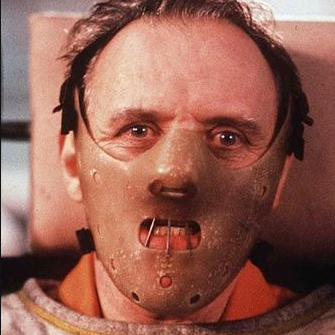
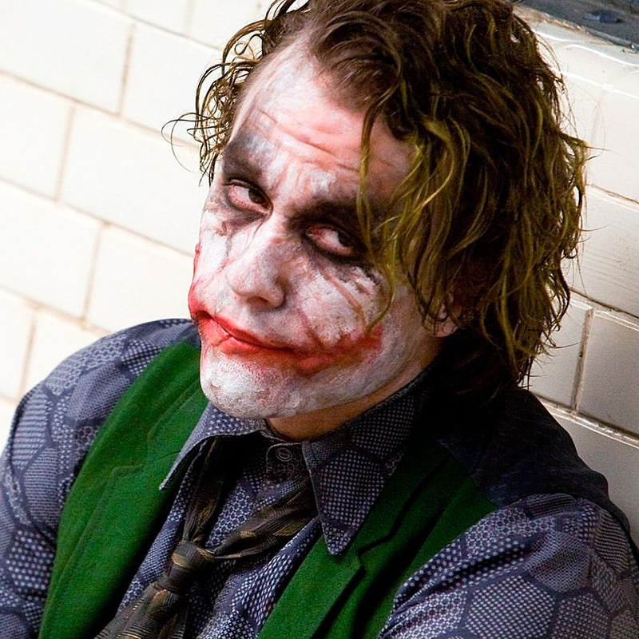
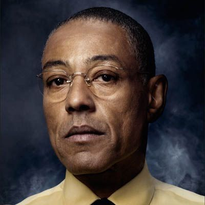

| Hannibal Lecter | Joker | Gustavo Fring |
|---|---|---|
|  |  |  |
Hannibal Lecter es un asesino en serie que se come a sus víctimas. Antes de su captura, era un respetado psiquiatra forense. |
El Joker es una despiadada mente criminal que aterroriza Ciudad Gótica, y sin objetivo alguno. Es el principal enemigo de Batman. |
Gustavo "Gus" Fring era el líder criminal de un imperio de drogas y el dueño de la cadena de restaurantes Los Pollos Hermanos. |